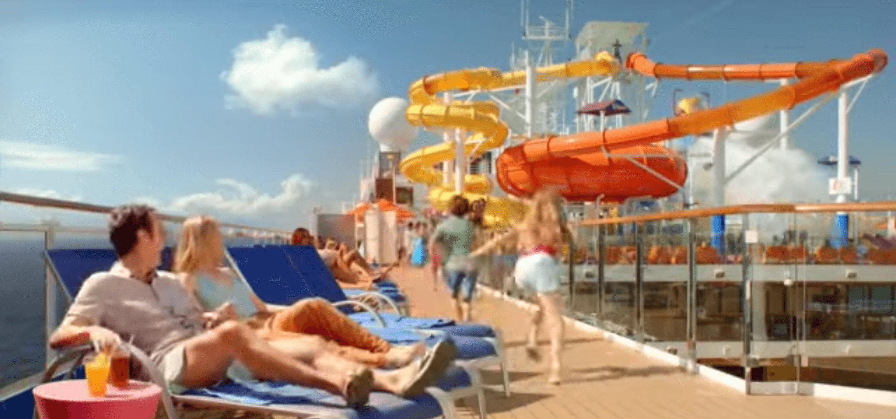
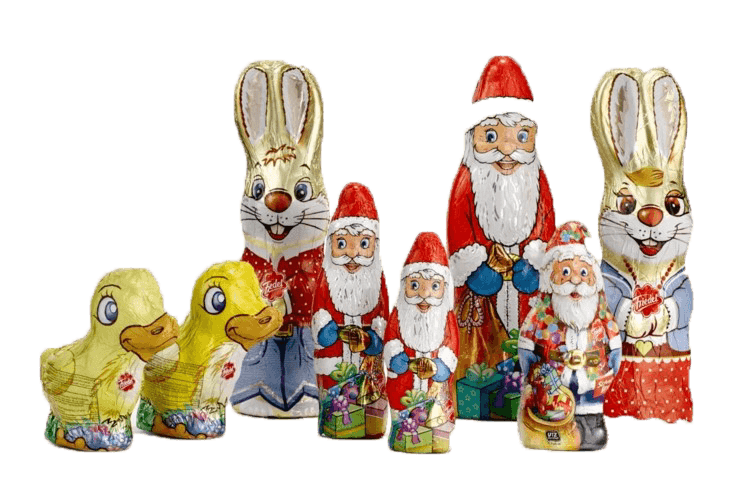
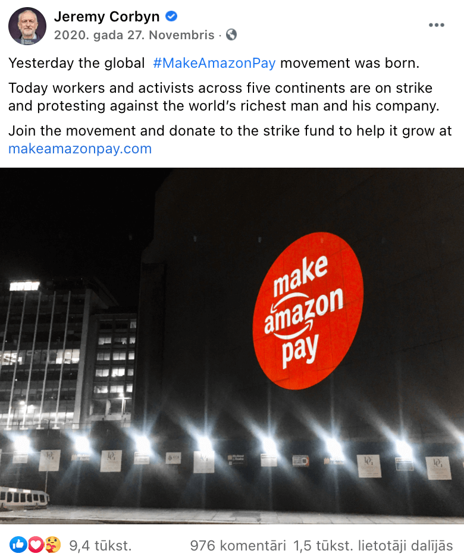
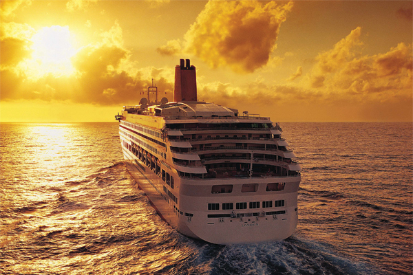

Three worlds of interest
Understanding The Problem
Graphic designer's role in the world

Chapter 0: The Setting
I am sitting on an oak-wood deck on a Queen Sunrise cruise, sketching a logo for a small pet snack business, and looking at the calm morning sea. All of us here are all very hopeful, enjoying the rising sun and heading towards a future with no future for the living. Ahoy!
The coming years can determine the future of our existence as a species. As I am sitting here, kerning the logotype, anger, sadness, and guilt fills me as I cannot wrap my head around how I can impact-fully participate in saving the world, therefore the thesis follows a research question of how a graphic designer as an individual, can participate in changing the world?
The subject of the thesis lies between ecology, the present world we live in (the main worlds of interest being the ecosystem, economic world and the inner world of an individual), and an individual in a costume of a graphic designer — the potential agent of change.
As the designer's creative occupation seems relatively trivial in comparison to politicians, doctors or scientists' contribution in the modern world, I find it important to highlight ways an individual, such as a graphic designer, can also meaningfully participate in the fight for a better future, especially in the age of climate crisis.
The thesis acts locally, target audience being individuals and designers. The work tries to educate, prove and inspire that graphic designers have incredible powers to make industries as well as individuals act and perceive in a pre-designed way. It also raises several speculative questions of how to make the world a better, more sustainable place. Can a graphic designer be taken out of the economic status quo it has been created for?
The thesis tries to imagine graphic designers' best possible way to act in the present not only as a designer but an individual. It is done using various methods — by researching the main problems of the world that contributes to climate crisis; by exploring sustainable examples of graphic design working together with industrial production; by questioning advertising agency's creative on practical possibilities to implement sustainable materials in pitches for clients; by briefly observing two climate movements happening now that are using centralised and decentralised visual language; by actively talking about the issues of sustainability and world with family and friends throughout the thesis writing process to actively participate in conversations related to climate, power of individual action and the root of climate crisis to grasp different views on it; by arguing with angry climate sceptics on Latvian Fund For Nature facebook page; by trying to disconnect the graphic designer from the economic status quo and practicing its craft in a much wider setup (this is done through visual experimentation during the thesis writing process to practice the state of mind where no practical purpose is needed to create. Through this method I also start creating works where I re-imagine depiction of nature).
Preferably this last part is what the final graduation work consists of – showing the possible new ways how graphic design can work in the present for the future. Throughout the thesis writing process I am taking responsibility for being the agent of change myself on an individual level. Unexpected turn of events has been the ending of my internship that changed my already written view towards a more positive one on conventional graphic design being used in movements. Internship also allowed me to participate in the production of identity of a global movement, allowing me to understand semi-politicalised graphic design from an insiders point of view.
Chapter 1:
Queen Sunrise. Three worlds of interest
Who were those good people that gave us free tickets to the cruise heading towards defuturing?1 I stand here with an organic gin-tonic in my hand, no straw, motivated to change the course of the ship. The heat on the deck is unbearable and I kind of like it. If I stand still with both feet steady on the wooden planks, a deep, unrhythmic bass from somewhere below travels through my limbs, damaging my genetic code and micro bending the oak floor. That kind of tranquil reverberation you notice only when it stops, and the peace and silence is so sudden that, at its moment of appearance, it seems obtrusive and loud—even uncomfortable.
The bass is not coming from the ship itself: rather from something deeper in the sea—but who can tell? We are in neutral waters; a lot of unaccountable activities can happen here. The bass does not seem mechanic though. It is a reverb of something at times familiar.
I stand still and listen to my pulsating limbs carefully.
I hear the ground breaking below the ocean floor. I see a liquid coming to surface and mixing up with the ocean water in a freaky dance. I hear a mega-machine in the mountains mining for ores that were later on crushed and transformed into Siemens A-55 — the first mobile phone I ever owned. I hear its ringtone. I hear how I answer and agree to go shopping with a friend. The bass is getting unbearable and I get nauseous. A reverb of the past is affecting my well-being in the present.
Here I am — a slightly sunburned agent of change, sipping a cocktail, sitting on a technological wonder and waiting for it to arrive to the last stop. In a world where we heavily rely on imagery-fuelled consumption and nature has become a commodity, our imprint on our own existence has become more than palpable. It is visible, feel-able, smellable, and still, it happens slower than a swipe to the left, therefore it is hardly noticeable in the fast-paced world we are part of. Taking the statement that the world’s ecology is on the edge of collapse as a given, how can I, as a visually thinking, gin-tonic-sipping graphic designer participate in changing the world so that the ship of our destruction changes its course? How can I, a tiny person in the sea with a tribal typography on the back of my shirt, change the world?
To understand how the world can be changed, one needs to define what is meant by the “world” in this context. Roughly there are three worlds of interest that affect each other and work similarly to the ecological cycle of interconnectivity:
1. The world as an ecosystem and natural habitat of 8.7 million species, including humans;
2. The world as a geopolitical whole embodying clusters of different societies governed by laws;
3. The inner world of a person.
The causal relationship and communication between these three worlds and strategic use of action from one world towards another are one of the points of interest in this research. An uprising of one world against another, then communicating its demands efficiently to the other, and proving to the worlds that all of them are entangled with each other, affect one another, and are all interested in the wellbeing of the other is a task I want to participate in as a human, a citizen, a person, and a graphic designer.
In my profession, I have been taught how to communicate, think critically, and be an active member of society (through the medium of design), and now, in 2020, I have an urge to discover how I can take these skills out into the world and make people lead the change necessary for their own survival.
When being observant and moving the cocktail umbrella to the left, on the deck of the ship one can clearly see all three worlds of interest merging in subtle cooperation. I will describe each of them individually, trying to show how inseparable and dependent they are on each other.
The geopolitical economic world: The ship, made in the 1990s and under the name Queen Sunrise, is a mega-machine that has had dozens of identities due to the multiple owners during the years. It is typical for the transfer of ownership to entail a changing of the name and identity, even though its dark skeleton, iron muscles and white steel skin stay the same. The cruise liner is also an investment. Cruise lines have vended, modernised, or renamed their ships to match with travel trends and their aim is, as for any sane company or businessman, to earn while providing (and often inventing) a service. Around the 1960s, with jet aircrafts entering the travel market, cruise line services went into a terminal decline. This was the moment when the shift from two-story ocean liners to mega-ship cruising took place. Since then, cruise lines have carried a dual character — being in the transportation business on the one hand, and in the leisure entertainment industry on the other. The casino on the deck, for example, starts working only when we are in the open sea to avoid disputes with local laws, and the same applies to shops. I bought my cocktail when we were in the open waters already. Although it was relatively expensive (around 10 euros), the more I drank the more I wanted to spend. In that sense, the design of the ship seems perfect — shiny, colourful, and hard to navigate outside of the entertainment zone. All of this is an intrinsic and necessary part of the economic world we live in that is governed by laws, and this cruise seems to work well as an appropriate advocate for it.
The world as an ecosystem and a natural habitat: The ship departs from one of the harbours it has docked in along the way for the shore excursions. This harbour was stuck into dense layers of sand on the coastal zone years ago and is now able to ensure that, every week, hundreds of well-rested dizzy homo sapiens from a continent a thousand miles away can access the tiny land with dry feet. From the sky, the ocean liner looks like a small parasite on the back of a walrus, swaying in its hairs. The ship steadily cuts through the odourless, tasteless, and nearly colourless chemical substance — the main ingredient of Earth’s hydrosphere and the fluid of all known living organisms — water.2 My cruise steadily cuts through the water’s waves, right below the ships’ plimsoll summer freeboard line so that the ship can continue to stay afloat and not surrender to the dark and boundless depth of the ocean.3 Fluke, salmon, cod, and flatfish all are periodically spotted underwater in flocks, as well as ~2 million more species yet unknown to us that slowly slide by in the deep ocean right below our feet. Forty-seven nautical miles to the south, six fishing ships are catching fish (it is hard to see which ones through my over-the-counter binoculars) to, later on, sell most of their catch to middlemen who will export the goods, while the smaller percentage goes to their local market as the villagers depend on fishery for survival.4 The steel ships, though they look like superficial creatures of the modern world, are basically a combination of natural materials pushed together in a semi-natural cluster of human imagination. In the past, ships consisted mostly of wood, but now the main ingredient is iron from the Carajas mine in the state of Para in Northern Brazil, bauxite (which later on becomes aluminium) from Quebec in Canada and polyethylene, which is a polymerisation of ethene produced by the cracking of a quite bitter cocktail of ethane, propane, naphtha and gas oil.5 All of these natural materials are served to us by cutting up mountains and digging deep into the soil, picking the ores, oils, and gasses most efficient to use, which makes me think that the mega-machine I slide through the waves with now is just as natural (and dependent on nature) as me being on it with
no safety vest on.
The inner world of a person: As a person I am sharing the deck with approximately 170 other individuals — they are mostly sunbathing, chatting, playing shuffleboard, sliding down the tube in the pool, and sipping mimosas. Some are reading. We come from different backgrounds, we have different values, traumas, upbringings, experiences, and therefore our perception of the world differs from one another as well.
My connection with this cruise ship is simple — it was made for me as a sole individual of the economical world. I believed this is the paradise I need to be in in order to get away from my responsibilities. We are all striving for happiness, but I have a feeling it is being used against us in the capitalist world by offering things we don’t really need. Apart from that — I am here, on this ship, as a person with a behaviour, beliefs, morals, values, and some spirituality at the very least. I chose to be here even though this existentialist thought puts an alarming amount of responsibility on my shoulders. If all of us on this ship had decided not to participate in this supernatural paradise, it wouldn’t exist in the first place. This thought for a moment makes me feel very powerful. Because I live in Western Europe and I have the privilege to spend, the ship really depends on my choice (money) as much as I depend on it now, 945 nautical miles from the shore in open waters.
My connection to the organisers of this cruise can be traced back through my payment transfer for the cruise, to their homepage, brand communication, character, and presentation of advertisements which, in the long term, has bent my ability to objectively judge which desires and insecurities of mine are planted and which ones are authentically mine. Was it truly a desire of mine to slide down a yellow fibreglass construction in the middle of the ocean in a tiny polyester bikini?

We, the individuals, are here, in the world’s ocean, on this economically loaded natural mega-machine. I think the manufacturers of the cruise didn’t know at the time that this journey would lead to the end of the world, as the Earth and our existence seemed so invincible. Now that we kind of rationally know it (which doesn’t mean we understand it), it is a bit hard to believe that doom is near as the horizon is still quite beautiful. Only the deep bass from below gives away the potential ending and ruins the sunset. I have a feeling the defuturing we are so eagerly sailing towards is very close to what the water is — odourless, tasteless, nearly colourless, and an intrinsic part of our very existence.
Chapter 2: Defuturing. Understanding the problem
It is lovely how idyllic human-made paradises contain also casual imperfections revealing bits of reality. As a 27 year old person, my first (conscious) time in a carousel park was four years back in Enschede (here I mean the travelling amusement park that goes from town to town, consists of easily assembled carousels that often are quite old, coloured over with vibrant characters from cartoons and big-breasted ladies in the airbrush technique). What I was surprised about was the harsh, blatant, metallic noise accompanying the carousels that I never heard in movies. I can only assume the playful tones that are being played there in particularly loud volume are also there to mask the squeaking of the metal structures and the huge engines shaking, throwing and (up)lifting people in the air. Imagining this amusement park with no music and no colourfully painted characters on the metal structures, seeing them clunk together, engines roaring, people screaming hysterically tragicomically gives me the association of torture.
The small human-made paradise Queen Sunrise is no exception to the interlocking between fantasy and reality. It is a home not only to roller coasters, vr rooms and potent substances, but also to a big, rusty engine — the mechanics of the vessel and the mechanics of the social structures in society — a jail and a morgue.6 They are located on the bottom floors of the cruise to discreetly keep a body without any distress for other guests.
The cheerful identity of the ship has been working hard to make me think of this cruise as the one thing that will make me free of any worries, presenting the best illusive reality I could possibly have. I close my eyes and forget what I know for just a little bit. Diving into my carefree fantasy I hear someone yelling. Someone has fallen on the oak floor from the heat. Unconscious. They are taking the person to the medical room. All I can think of is how surprisingly hard reality hits when it has not been experienced for a while. The contrast is harsh, and the feeling of getting a glimpse of reality in a place it shouldn’t exist is depressing. This combines well with the nowadays systematic production of fantasy objects built on a hidden, tainted reality.
What I talk about when I talk about problems of the world
The economic world we live in works using similar techniques of selling a dream, and the graphic designer plays an integral role in it. Hundred companies have been the source of roughly ⅔ of global emissions since 1988.7 and the consumption of fossil fuel produced dreams specifically is one of the main causes behind the climate crisis.8 As it is an overarching problem of all three worlds and is an issue I am interested in the most, I distinguish two specific figures of interest — the lack of transparency in the production processes (1.) and the individual’s (consumer’s) behaviour (2.).

1. Poor production practices lead to poor management of sustainability (if any). If it would be possible to make the chain of production transparent, I believe it would be much easier for consumers to understand the importance of what production practices (harmful or ethical) they are identifying with and directly supporting with their money and why it matters. Dangerous lack of transparency is present in nearly every conventional field of production — smartphone production, fashion, the meat industry and agriculture, transportation and even the chocolate industry to mention a few (the latter demonstrating the complications of opaque chains of production apprehensively).9
 Chocolate is a product associated with joy and celebration. It is specifically designed by designers and illustrators, and marketed for every international holiday — for Christmas as Santa Claus, Easter as bunnies and chocolate eggs, and Valentine’s day as chocolate hearts. The feeling of comfort and luxury it brings with its special packaging and exquisite taste is unparalleled, but what we often do not see is the heavy cost of it. When one tears away the red foil from Santa’s shoulder, underneath lies the chocolate’s supply chain where consumers’ affordable luxuries are paid for by misery and exploitation. The journey chocolate makes from cocoa bean to foiled Santa is saturated with corruption and exploitation, and nearly all participants in the industry are entangled in a complex and often cruel supply chain which doesn’t bring enough income to the most vulnerable people at the beginning of it. The chocolate industry makes well over 100 billion dollars a year whilst most farmers growing and preparing the cocoa make less than one dollar a day.10 In such poverty, it is difficult to expect farmers to do the right thing in terms of sustainability or exploitation. If the chocolate industry in Europe or United States of America would make slave-free cocoa bean production a mandatory requirement for the imported goods (and therefore would pay a fair price to the farmers), it would make a drastic difference not only to forty to fifty million farmers on the other side of the world, but the decisions they make towards sustainability, ethics or human rights — topics one cannot even start to think of while the question of bare survival is still on the table.11 A situation like this forces farmers to take desperate measures, such as slavery and child labour, and at the end of the day consumers are directly supporting and sponsoring a product that has a direct link to the exploitation of humans and nature without even knowing it.
What the example of chocolate illustrates so well is how a lack of knowledge on the making of a product in today’s world, and the graphic designer’s cheerful bunny on the chocolate wrapper can detach the product even further from the basis of reality.
Sustainable cocoa-practice examples where the designer brings in significant value are Mast Brothers and Tony’s chocolate. While Mast Brothers organic and traceable chocolate’s packaging aesthetic is an absolute ode to the clean-cut design and makes the ethical chocolate a beautiful luxury object of desire, Tony’s Chocolonely’s lively design is an example of a proud incorporation of education for the consumer on a slave-free supply chain on the packaging. The company’s decision to educate the consumer through advertisement also reminds that graphic designer is the master of making information accessible for broader audiences. Even going through the above mentioned CDP’s study of the most polluting companies since 1988 one can observe how easy it is to grasp the research data, because of the access graphic designer has granted through its professional touch, turning heavy information into easily digestible visual pleasure.

These are two good examples on how graphic design can showcase sustainable production as a modern, desirable, mainstream product opposed to the already banal brown recycled paper and linen ribbon that push the sustainable products in the aisle of “alternatives”. If sustainable products have a chance at being the apple of the consumers’ eye on a daily basis, their graphic design identities have to be even sleeker than any other product. They have to qualify as the new norm to be consumed at mass and therefore change the power dynamic of supply chains towards more sustainable ones. That would change they way farmers grow, intermediaries pay and industries operate, already changing the world at large.
2. Consumer’s behaviour is a much more nuanced thing to work with, but it is also the one thing we all have a direct power to affect. It is one tentacle of our inner world where our values and character are weaved in. While trying on the coat of eco-proactivity I publicly involved in a discussion with another person in Latvian Fund for Nature’s new campaign on Facebook. During the exchange of comments I had an opportunity to experience the mindset of laughing at the idea that one person can change the world which is actually something I strongly believe in. My discussion partner oppose the idea that small actions can change anything on a bigger scale and the argument he was using was that the European Union cannot make a difference because big polluters are the countries in Asia. In short, such an argument demonstrates a lack of understanding. The cause of pollution is not necessarily always found in the geographical location of its occurrence — for example, there would be no pollution in Asia without the consumer from eu and usa purchasing the goods made there. The people with the highest incomes are the main contributors to the pollution. Either way, the discussion was not very fruitful as the sceptic was a bit rude, not well informed and saw the motivated people involved in any individual sustainability action as green freaks living in a utopia. It made me wonder.
Nowadays, behavioural information has become the most valuable information companies want to obtain, and not for nothing. Since personal data has become a commodity, it now outperforms any natural resource on the planet as the most valuable material on earth.12 The value of our attention and information is described well by Shoshana Zuboff.13 She states that the goal of today’s surveillance capitalism commodifying reality is to globally change people’s actual behaviour. People using social media are not really aware that the usage is actually paid by their behavioural input. Having said this, it is a tragic contradiction that people do not believe they can individually change anything regarding the (mal)functioning capitalist system or its effects on ecology while, at the same time, Silicon Valley’s most valuable asset is the prediction and control of an individual’s behaviour. If our behaviour is a useless player in changing the world, why do the world’s largest investments lie on the choices we make?
Individual's role in changing the world
It is easy to think one cannot change the world — it releases responsibility from one’s own actions. The strategy of producers putting the responsibility on the consumer is also not the correct way to handle the situation — the ridiculous “Please, recycle” sentence placed on every disposable CocaCola bottle being an example. Until we demand and receive more urgent action from politicians, we have to wisely use the power of our choice that companies depend on, and that involves changing our own behaviour in what we eat, what we wear, what we buy and what (and how) we demand.
It is not easy to change one’s behaviour, especially elements as intrinsic to one’s culture as diet. Design theorist and philosopher Tony Fry states that in order to fundamentally engage [with a global problem], one has to “learn to think and act in another way, and therefore to participate in a process of unlearning”, agreeing it is hard to do because it is hard to break habitual approaches.14
Unlearning is both a personal and global challenge. The nonverbal visual persuasion of advertisement arrows pointing in all directions as I grew up have mixed together with the wishes of my authentic personality. Any deliberate shift away from the accepted norm causes me to stand out from the crowd, which, speculatively, on a biological level, acts against my own survival. An option I can take as an individual is to understand my principles and act in accordance with them, educate myself, as well as acquire a certain attitude of perseverance, determination, confidence and hopefulness. I do have a tool in my hands as an individual: a choice, and this choice belongs to millions of other individuals as well whose money sustains every economy on the planet. If this choice is used collectively and strategically to support more sustainable products (and boycott the opposite when possible), it tells the companies that the demand (i.e. money) is flowing in a direction of sustainability, and their flawed ways will follow this current of revenue that is already happening.
Veganism (being a very individually-based ethical lifestyle) has been a great example of how the collective demand for a certain quality products that has occurred from an individual choice first has changed the supply globally. It shows how a very personal ethical choice can turn into a global action through small everyday life choices made in the grocery store.15 This example shows well that any change made in the microcosm (in this case the inner world and behaviour of a person) gradually reflects in the macrocosm (the world); therefore I strongly believe changing the microcosm of oneself might be the single most efficient way to actually change the world, specifically when done collectively.
Chapter 3: The Saviour. Graphic designer's role in the world

In 2021 it is not a tricky task to place the graphic designer in any of the three worlds of interest, be it the economic, the ecological or the inner world of a person. Even though nowadays graphic designers create mostly for economic purposes, there are plenty of designers focusing on and working with social projects, equity, discrimination, human rights, sustainability, politics or psychology in their work, to mention a few. As the graphic designer of 2021 is capable to grasp and involve in thinking that covers much deeper topics than “how to raise company’s turnover with the usage of colour” and goes beyond the financial gain as the marker of ultimate success, I find it important to take a look at graphic designers’ ethical role and obstacles in the modern economic world.
Now, the graphic design industry is mostly serving the economic world, motivating consumers to execute various actions on behalf of the companies by attractively dressing up their products. It is more purposefully done in campaigns executed by advertising agencies (Z) and less direct (but still present) in contemporary graphic design like the packaging design example of K9’s soap bars (Y). When designers have provided attractive solutions for their client’s products, companies can then, from the money earned, make newer products and offer them to the consumer again. The economic system depends on the cycle where money goes around the globe, and the sequence where companies offer the food, hygiene products, electronics, and roof above citizen’s heads for them to be able to survive, work and consume again is a vicious cycle that makes me think in associations even further.16
In the game of associations I played with my cabin companion on the deck yesterday, one person thinks of a word and then immediately accepts the next one that naturally comes to mind, forming a chain of words that might reveal something about one’s subconscious or even, as we played it, offer an esoteric solution to a previously defined problem. As I slide into my subconscious with the words hot, sun, beam, melt, snow, glacier, dirt, soil, and mole in front of my eyes, I relatively easily surprise myself with the quite logical cocktail of defuturing, doom, death, cycle, ecology, causality and soon enough — peripeteia.
Defuturing as the final destination of our cruise is quite a depressing thought, even though the tan you can get on the deck along the way it is quite sensual. I assume it is our final destination, but more than that, it is also a direction. Causality is the cycle of cause and effect, the direction from one whole to the other. I think of it often when I wonder about the climate crisis and what are the underlying starters and preservers of it, like the opaque supply chains and their consequences mentioned earlier. Ecology is a cycle of happenings within itself — the rain that has touched the ground soaks in, moving forward in the ground to sustain flora and fauna. It evaporates further in the air, forming clouds and coming down as a liquid again
The common part for all of these terms is the change from one state to the other. The process, the way, the starting point, and the continuum to the next stage. An arrow that indicates the direction towards something else. A loose association. A precise intention. A morph. As far as we are in motion, there is a place for peripeteia — the sudden reversal of fortune, change in circumstances that could be the lucky star we were unknowingly hoping for when we started trying to steer away from defuturing. If it is too late to turn the steering wheel, it could be the lucky iceberg, the almighty storm or the sudden fortunate heatwave that turns the ocean into vapour, boils our blood, puts the ship on the sandbank and liberates the future generations from the burden of reaching this unpleasant destination with no future that we brought onto ourselves without even knowing it. Peripeteia. As much as it is chaotic, it is also full of hope. The pandemic has hit the world hard, and one thing it has brought, out of many, is the chance to change, shape and morph the world as we know it. Why not throw a graphic designer into the change as well?
As Tony Fry put it in 2011, it is important to grasp this critical moment like no other before. He calls critical moments “opportunities” and not only states that people will have a possibility to change the course of our ship, but that it will also be done using the chance multiple unprecedented crises have provided for us as the human habitat will change. “This is the opportunity of crisis. [...] Loss and breakdown will certainly occur and the new will come at a price, but what is certain is that design transformed will have a central role to play in the creation of any futuring process.” 17 What is meant here by the designer’s role is the re-design of politics as we know it, weaving strategic and inclusive re-design into all the global transformations as a political agent. Even if politically loaded, design is not necessarily my personal interest as a designer now, seeing the design put on a pedestal as one of the main participant in rebuilding the world gives me certainty that the value of a graphic designer reaches further than that of a servant for the economic status quo.
Branding in the age of conscience
The profession of a graphic designer is born for the economic world but, as time flies, I see how this world is not working properly and how the economic world, by its vast consumerist tendencies, is contributing to the damage of the ecology and the wellbeing of the people. As I have started to gain knowledge not only as a graphic designer but also as a citizen, individual, persona, activist, and consumer, I realise there is a clash between the economic world and my inner world as an ethically responsible person and designer.
Graphic design is altogether a service industry fixed to the economic status quo. Apart from physical consumer products, graphic designers are also part of developing a more valuable service for the manufacturers themselves — brand design, which can be done either for a new company that still has to catch a potential clientele, or an older company that wants to reshape their character or reputation.
Brand identity would usually include a new name for the company, a new set of company values and beliefs, and a new logo and overall visual identity that will strengthen the company’s character and make it visually and communicatively consistent, accessible and trustworthy to the public. After the design work is done, in the long term the company will ideally sell more products, earn a bigger revenue, employ more people and therefore contribute to sustaining the local economy (and possibly the unsustainability of the environment).
If graphic designer’s interest lies in dismantling the economic status quo, it can create confusion within the inner world of the creative individual. Graphic designers who identify themselves as aware individuals both on a personal and a professional level have been put in an unfavourable position — it is a problematic subordination to make a brand look legitimate, beautiful, and trustworthy if, at the same time, one understands the actual harm that company’s practices do to the world.
We can take Primark potentially changing its brand identity as an example. Apart from the long years of accusations and investigations on various violations, Primark has pledged to fulfil diverse pledges of ethics and sustainability through their homepage as the main source of communication, but as stated by Good On You, an initiative that offers accessibility to brands that are aiming for sustainability in their production, Primark’s environment rating is ‘not good enough’. They note that Primark uses almost no eco-friendly materials, no evidence of reduced target for greenhouse gas emissions, and no evidence that Primark is trying to meet its deadline of hazardous chemical elimination by the end of 2020. Additionally, “none of its supply chains are certified by labor standards which ensure worker health and safety, living wages or other labor rights [...] [and there is] no evidence it ensures payment of a living wage in its supply chain.”.18 In a case where the ethical graphic designer (amongst the whole creative and marketing strategy team) has the ability to make a rebranding for such a company, it is morally hard as the new brand design has to correspond to their new strategised keywords of “trustworthy”, “accessible”, “sustainable”, using the newly designed brand character as a gateway to a new image by sewing a new colourful polyester costume onto the pale size-zero body of the same old
production practices.
It would be creatively stimulating to see how a graphic designer, with their knowledge of visual strategies, would participate in what is essentially the opposite of a brand development procedure — the process of un-branding. In such case the designer would invert the translation of brand identity strategies of invented characteristics and direct them back to the root where the true characteristics of the company appears with its poorly managed cheap labour supply chains and unsustainable production practices in the forefront. How would such a company look like visually as a brand? Should all the products be stripped from custom graphic designs and be granted an universal, neutral identity with production practices and conditions written in bold on the front?
To detach graphic design from its economic purpose ironically seems like an unnatural move from a graphic designer who wants everything in the world to be natural. The Food and Drug Administration has still not engaged in rule-making to establish a formal definition for the term “natural”— you can put it on a chocolate bar as well as a bathroom cleaner. I will therefore also put this label on my unnatural efforts.
Graphic designer's role in
changing the world
I believe the designer cannot be separated from its carrier–the individual persona, and to be a world-shifting graphic designer and individual means fundamentally tackling problems way outside the graphic design field — not only into the obvious economic, political and social frame but even more so into the personal frame of individuals’ values, ethics and attitude.
I do have tools in my hands as a graphic designer:
a feel for composition, a sharp mind for the systematisation of information in a structurally understandable and visually appealing manner, and a choice. This package allows me to not only follow the actions available to the individual, such as supporting sustainable products, boycotting others, engaging in discussions, being politically active and changing my diet, but also to reach broader audiences. I can therefore be active in my own creative form of resistance to limit exploitative production practices on an even greater level. This opens up the question of communication — how do I get the message across? For example, if I would want others to also consume less products of animal origin, would it be more efficient to yell at them at the dinner table in a family gathering or punish them at the supermarket meat aisle when they are reaching out to grab a piece of chicken? Should I walk around with my clothes covered in graphically pleasing statistics and educate passively but persistently in public space, or would a catchy song with a music video work better? Should I learn a thing or two from Russian propaganda artists and use it to advertise sustainability? Should I make people feel guilty about their choices or should I make them feel happy — which state of mind will result in the most efficient action? The moment where graphic designers step into the action with their professionalism can be anywhere in the process of fighting for climate justice, the most important aspect is to make the first step and start practicing any activity on a personal or professional level. For graphic designers I see an opportunity in the communication about environmental issues especially when it comes to visual depiction (1.) and visual communication (2.).
1. The visual depiction of nature in modern visual capitalist culture is one of the things I see as necessary and possible as a graphic designer to tackle. In supermarkets, the dominance of “natural” and sustainable products are stuck in a narrow niche that often reduces nature to romanticised depictions of country vistas with happy animals, bright flowers and a sunny blue sky, suggesting a fragile yet everlasting stereotypical beauty. This mainstream association of nature as always green, tender, “needing to be saved” and dependent on humans is shallow and misleading. Nature at its core is not only a sunny farm but an unpredictable, dangerous, colourful, healing, poisonous, powerful, scary, mesmerising, gross and omnipotent whole that will live on with or without us. Because of this I have started to challenge my own perception and exercise my creative abilities as well by thinking of nature in a visually broader spectrum. Some of the graphical exercises are being presented in pictures below.


If it were possible to re-shape the way nature and eco-movements are set in our minds from illusive depictions in the commercial world, I would speculate it would help making the act of preserving the climate a more widely accepted, trendy and more mainstream idea that would follow up with political lawful actions making sustainability the new norm. It could be a movement everybody wants to be part of, a brand everyone wants to wear and a word everyone wants to be seen under.
On the note of making sustainability the new norm, theoretically designers could also choose the materials they want to use for the (mass) produced object. I approached my friend who works in an advertising agency to explain to me if it is possible for them to implement more sustainable choices of materials in projects for large clients. Her answer was dry and simple: everything depends on the budget. The cheapest option usually is the one that is chosen, which in turn excludes more expensive sustainable materials (especially if there is little chance of having a creative in the house with a priority of offering sustainable paper options). This makes me realise that in the capitalist world, sustainability should not only be visually trendy but also made financially available; or, more realistically, cheap production has to add to its price tag the yet-unpaid real cost of cheap labour and weakly regulated exploitation of nature, which is the main reason why lots of unnaturally cheap products are competing with more expensive sustainable options. But to do this, there has to be political involvement to legally resolve the issues behind the opaque supply chains.
2. An example of visual communication as a symbiosis of graphic design and political activism are visual materials for movements demanding political action on a certain issue. Two of them in the Netherlands raised my interest as a creative — the Extinction Rebellion protest (Amsterdam, 2020) and the climate march (The Hague, 2020). The fundamental difference between the movements is that the climate march is a peaceful gathering while Extinction Rebellion uses acknowledged nonviolent civil disobedience. The visual difference between them is that the visual identity in protests is centralised under specific guidelines only for Extinction Rebellion.
The climate march that took place all across Europe in 2020 had no identity and thousands of participants made posters themselves with ordinary tools they had at hand. In this march, most of the signs stood out with their exceptional visual qualities made from various found materials, and stitched together in absolute free-style which, as a designer, I valued as incredibly inspiring and refreshing in the sea of overly refined designs. The posters were authentic, personal, rough and unique: radiating a feeling of untamed power. Also the transparency of the signs (both physical and metaphorical) was touching as all layers of production were bluntly visible.


Extinction Rebellion’s visual identity is professionally well made under Clive Russells’ lead so that the participants would always have visual materials ready to use (except commercially), it would always be inclusive (the participants are invited to add to the identity what they want), it would be clear which movement it is, what it stands for, and that anyone can be part of it. Bold sans-serif typeface accompanied with a graspable sandglass-in-a-circle logo made by the anonymous street artist esp works well in terms of recognition. Also the solid background colours that switch between purple, pink, orange, yellow, neon green and black are a distinctive feature of the identity in combination with the typeface that they first bought on Ebay as wooden blocks.19 It is a paradoxically a corporate-style identity which in practice acts in an opposite way by being completely open-source and aiming to be inclusive and connective for the most diverse parts of society and cultures.20
Even though the Extinction Rebellion example is the most direct way I imagine graphic designers being involved in political action, as a creative I didn’t really see much visual value and interest in a centralised visual identity for movements. My personal taste goes for more less refined stylistics, especially in the case of a protest where human energy, in collaborative effort and uncoordinated messaging, is the main driving force (and a handmade poster is a powerful way of demonstrating it). At least that’s what I thought until the recent turn of events that made me appreciate more conventional movement design stylistics as well.
Chapter 4:
This is how you change the world.
Conclusion

Recently, while doing an internship at Studio Remco Van Bladel, I had a chance to design a logo for a campaign organised by Progressive International — make amazon pay. The campaign was meant to popularise the Amazon boycott on Black Friday (27th November 2020) by raising awareness of Amazon’s universal workers’ rights, job security, sustainability, and demanding they pay taxes in full.
The design brief was quite straightforward and the colours and placement of words was already suggested. At that point I did not realise the scope of the movement and therefore felt quite comfortable playing around with the logo more than was asked to. For my surprise, from a bunch of spontaneous sketches shown for approval, they approved an option where another copy of the original Amazon’s arrow is mirrored on top of the logo, indicating the direction back from “z” to “a” which finally was picked as the main logo of the campaign. At that point I didn’t think of the logo as an outstanding piece of design, just something that really worked for its aim.
The last day of my internship took place during Black Friday, when the “make amazon pay” campaign went to the streets. I only realised the global scale of the movement the next morning. I received pictures from Bangladesh, India, Australia, Brazil, Poland, Belgium, Germany, and the United Kingdom, and when I saw Amazon workers holding the protest logos I designed in their hands all across the globe — I cried. For the first time, I understood what centralised visual identity for a movement means to the people who are physically at the front lines of the movement, fighting for the future.

 I realised that the united visual language in such a movement cannot be evaluated merely as a visual aesthetic as I did with Extinction Rebellion. By observing the participants facial expressions, body language, verbal expressions in videos and on the internet alongside the usage of the movement’s visuals, I saw that the identity not only served as a medium to carry their message, but even more as a strong moral backbone and support for the legally unprotected workers.
I realised that the united visual language in such a movement cannot be evaluated merely as a visual aesthetic as I did with Extinction Rebellion. By observing the participants facial expressions, body language, verbal expressions in videos and on the internet alongside the usage of the movement’s visuals, I saw that the identity not only served as a medium to carry their message, but even more as a strong moral backbone and support for the legally unprotected workers.
The united identity they are marching under gives them certainty, safety— a feeling they have a steady foundation to stand on. It gives them needed confidence when thousands of workers are united under a solid, joint legitimate organism and no one can tell them their protest is a joke.
What this experience revealed to me from a graphic designer’s perspective is that work like this changes the world not through the designer but through the other people applying the work. This identity has given people spirit and unity that otherwise wouldn’t be possible due to cultural, lingual and geographical separation as well as the fear of repercussions, and through unity, they are effectively demanding their rights and changing the course of their own cruise.
The big change of the world happens when the work we, as graphic designers, have made goes out of our hands, therefore we can rarely truly grasp our work’s ability to change the world in the beginning of the project and in the short term. We create not only perceptions of things but also instruments, and the fact that 3 days after the Black Friday motion S5M-23515 had been introduced to the Scottish Parliament, calling for “[...] Amazon to pay its workers fairly” 21 and 6 days later 401 elected officials from all continents added their signatures to demand Amazon change the company’s policies is a solid affirmation that the created instrument works.22 A tiny graphic designer can and has participated in the process of changing the world for the better, loosening the screws of the malfunctioning parts of the steering wheel.
The economic world, natural world and the world of an individual coexist within one another. The mix of all three worlds is what makes an individual that has chosen to work as a graphic designer, and the inner world of a person (personal decisions based in experience, culture and education) has the main power of directing the ship towards defuturing or back. The gin-tonic sipping individuals on the Queen Sunrise’s deck are all the agents of change as they have the incredible power of choice the ship itself depends on, and even better if one of them is in the costume of a graphic designer. The tools we are capable of developing are not only the dangerous depictions of happy cows in a sunny meadow on a milk carton. The instruments of our creation are similar to the real depiction of nature that is still waiting its moment on food packaging — unpredictable, omnipotent, colourful, mind blowing, powerful, scary, poisonous, healing, gross and mesmerising, and it is fundamentally our choice which characteristics and method we choose. We will rarely know from the start if our work will change the world’s processes and we don’t necessarily have to aim for it. What needs to be remembered is that every little step counts together in miles, and if the designer’s work has micro-bent the oak fibres of the deck of anyone’s inner microcosm — a world has been changed already.

Bibliography
Books & Periodicals
Bales K. (2004).
Disposable People: New Slavery in the Global Economy. Berkeley,
ca: University of
California Press.
Bridle J. (2018).
New Dark Age: Technology and the End of the Future. London, New York: Verso.
Demos T.J. (2017).
Against the Anthropocene. Berlin: Sternberg Press.
Fry T. (2011).
Design As Politics.
New York: Berg.
Foucault M. (1975).
Discipline and Punish France: Gallimard.
Harari Y. N. (2011).
Homo Sapiens. Israel: Dvir Publishing House Ltd.
Haraway D.J. (2016).
Staying With The Trouble. USA: Duke University Press.
Kozlowski A., Bardecki M. (2012).
“Environmental Impacts in the Fashion Industry.”
Journal of Corporate Citizenship (45).
Morton T. (2016).
Dark Ecology: For a Logic of Future Coexistence.
New York: Columbia
University Press.
Roberts L. (2006).
good: an Introduction to Ethics in Graphic Design: Ethics of Graphic Design.
Switzerland: ava Publishing sa.
Smithson R. (1979).
The Collected Writings. Berkeley, ca: University of California Press.
Zuboff S. (2019).
The Age of Surveillance Capitalism.
London: Profile Books.
Movies and videos
BBC. (2019).The Price Of Fast Fashion.
Burtynsky E., Baichwal J. (2007).
Manufactured Landscapes.
Burtynsky E., Baichwal J. Pencier N. (2018).
Anthropocene: The Human Epoch.
Blewett K., Woods B. (2000).
Slavery — A global Investigation.
DW Documentary (2020).
Sustainable business, rethinking growth — Founders Valley.
DW Documentary (2020).
The Clothes We Wear.
Griffin P. Dr. (July 2017).
CDP Carbon Majors Report 2017. CDP.
Hughes J., Fothergill A., Scholey K. (2020).
David Attenborough: A Life On Our Planet.
Ishii K. (2004).
A Taste Of Tea.
Klein E., Posner J. (2018).
Explained.
Nasser L. (2018).
Rotten: Bitter Chocolate.
Orlowski J. (2020).
The Social Dilemma.
Others
Epic Of Gilgamesh. (2100 BC).Mesopotamia.
Plinta N., Personal interview.
(12 October, 2020).
Electronic sources
Amnesty International and Afrewatch. (Date unknown).“Is My Phone Powered By Labour?”
www.amnesty.org/en/latest/campaigns/2016/06/drc-cobalt-child-labour/
Bassompierre L., Almeida I., Perez M. G.
(19 October 2020).
“$100-Billion Chocolate Industry Still Plagued by Child Labor.”
www.bloomberg.com/news/articles/2020-10-19/child-labor-worsened-on-west-african-cocoa-farms-study-shows
BBC. (24 March, 2010).
“Tracing the bitter truth of chocolate and child labour.”
news.bbc.co.uk/panorama/hi/front_page/ newsid_8583000/8583499.stm
Bigford J. (2019).
This Is Yoke. “Branding a movement: Extinction Rebellion.”
www.thisisyoke.com/blog/branding-a-movement-extinction-rebellion/
Bose T., Neha S., Hills D. (Date unknown)
“Climate Change and Diet. iza Discussion Paper No.13426.”
ssrn.com/abstract=3643190
CruiseHive. (July 24, 2019).
“10 Shocking Cruise Ship Facts You Never Thought Of.”
www.cruisehive.com/shocking-cruise-ship-facts-you-never-thought-of/33189
CNN. (13 January, 2014).
“What cruise lines don’t want you to know.”
edition.cnn.com/2013/02/13/opinion/walker-cruise-ships/index.html
Dalio R. (2013).
“How The Economic Machine Works.”
www.youtube.com/watch?v=PHe0bXAIuk0&feature=emb_logo
Eagle J. (7 December, 2017).
“‘It’s a wrap’: Constantia Flexibles packages more than 50% of chocolate Santa Clauses in Germany.”
www.confectionerynews.com/Article/2017/12/07/ Constantia-Flexibles-packages- chocolate-Santa-Clauses
Fairtrade Foundation. (2020).
“What is Fair Trade?”
www.fairtrade.org.uk/what-is-fairtrade/
Fauerbach T. The Northridge Group (Date unknown).
“More Valuable than Oil, Data Reigns in Today’s Data Economy.”
www.northridgegroup.com/blog/more-valuable-than-oil-data-reigns-in-todays-data-economy/
Goldenberg S. (20 November 2013).
“Just 90 companies caused two-thirds of man-made global warming emissions.”
www.theguardian.com/environment/2013/nov/20/90-companies-man-made-global-warming-emissions-climate-change
Good On You (2020).
“Primark.”
directory.goodonyou.eco/brand/primark
Grand View Research (May 2020).
“Chocolate Market Size, Share & Trends Analysis Report By Product (traditional, Artificial), By Distribution Channel (Supermarket & Hypermarket, Convenience Store, Online), By Region, And Segment Forecasts, 2020-2027.”
www.grandviewresearch.com/industry-analysis/chocolate-market
Greenpeace (Date unknown).
“10 principles of corporate accountability.”
www.storage.googleapis.com/planet4-international-stateless/2018/04/884f4b59-gp-10-principles-for-corporate-accountability.pdf
Inkota Netzwerk (2020),
“Make Chocolate Fair.”
www.makechocolatefair.org/issues/cocoa-production-nutshell#:~:text=Cocoa%20production%20provides%20 livelihoods%20for,families%20in%20the%20Global%20South.
It’s Nice That (13 October, 2016).
“The only way is ethics: what are the moral obligations of a graphic designer?”
It’s Nice That.
www.itsnicethat.com/features/ethics-graphic-design-essay- 131016?utm_source=facebook&utm_medium= social&utm_campaign=intsocia.
Kearns M. (2 July, 2015).
“7 challenges facing future global seafood supply.”
www.seafoodsource.com/news/environment-sustainability/7-challenges-facing-future-global-seafood-supply.
Mast Brothers (2020).
“Our Family Promise.”
mastchocolate.com/about.
MarketsandMarkets Analysis (2020).
“Dairy Alternatives Market by Source (Soy, Almond, Coconut, Rice, Oats, Hemp), Application (Milk, Cheese, Yogurt, Ice Creams, Creamers), Distribution Channel (Supermarkets, Health Stores, Pharmacies), Formulation and Region — Global Forecast to 2025.”
www.marketsandmarkets.com/Market-Reports/dairy-alternative-plant-milk-beverages-market-677.html#:~:text=The%20dairy%20alternatives%20market %20is,by%20plant%2Dbased%20dairy%20alternatives.
Nasa (2020).
“The Causes of Climate Change.”
climate.nasa.gov/causes/.
National Ocean Service (2020).
“What is a Plimsoll line?”
www.oceanservice.noaa.gov/facts/plimsoll-line.html.
Ong J. (8 October 2020)
“Roll up roll up!”
It’s Nice That.
www.itsnicethat.com/articles/olivier-bertrand-la-perruque-graphic-design-publication-081020?utm_source =facebook&utm_medium=social&utm_campaign =intsocial&utm_content=fbregular&f bclid=IwAR2fJ7OngK4K0xj8m6j O0ebXOdpjTguulSpTRRplpA uLN99mMdiX-oytBSw.
Onof C. J. (Date unknown).
“Jean Paul Sartre: Existentialism.” University College, London.
www.iep.utm.edu/sartre-ex/.
Padilla A.J., PhD. (2020).
“Niobium (Columbium) and Tantalum Statistics and Information.”
www.usgs.gov/centers/nmic/niobium-columbium-and-tantalum-statistics-and-information.
Prof. Vasconcelos M. (12 February 2018).
“Meat substitutes and lentil pasta: Legume products on the rise in Europe.”
www.uni-hohenheim.de/en/press-release?tx_ttnews%5Btt_news%5D=39041&cHash=7d 3379678828c2cddf90799cde96b63c.
Rice University (Date unknown).
“Biogeochemical Cycles.”
www.openstax.org/books/microbiology/pages/8-7-biogeochemical-cycles.
SHM (30 April 2018).
“Exploring The Hull Material Used in Modern Boat Design.”
www.shmgroup.com/blog/exploring-hull-material-used-modern-ship-design/.
Shiels J. (6 October 2019).
“The Conversation. Extinction Rebellion: how to craft a protest brand.”
www.theconversation.com/extinction-rebellion-how-to-craft-a-protest-brand-123084.
Smith A. (4 December 2020).
“Amazon: 400 global politicians demand Jeff Bezos pay more tax, increase wages, and protect the environment.”
www.independent.co.uk/business/amazon-jeff-bezos-legislators-letter-b1765238.html?fbclid=IwAR3qvp E21kyUSn2vt3yLr3a9OiXowejps4uAXdhrF jTBaJtkNROP4T6RnH8.
Sutan M. (23 April 2020).
“Science denial among the greatest risks to humanity, new ‘call to arms’ report finds.”
www.abc.net.au/news/2020-04-23/science-denial-among-the-greatest-risks-to-humanity/12174782.
The Vegan Society (Date unknown).
“Statistics.”
www.vegansociety.com/news/media/statistics.
Tony’s Chocolonely (2020).
“Tony’s Impact.”
www.tonyschocolonely.com/nl/nl/onze-missie/tonys-impact.
Unilever (19 December 2018).
“Unilever acquires The Vegetarian Butcher.”
www.unilever.com/news/press-releases/2018/unilever-acquires-the-vegetarian-butcher.html.
United States Department of Agriculture (July 16, 2020).
“Coastal Zone Soil Survey.”
www.nrcs.maps.arcgis.com.
United States Environmental Protection Agency
(Date unknown).
“Environmental Justice.”
www.epa.gov/environmentaljustice.
United States Environmental Protection Agency (2018).
“Greenhouse Gas Emissions.”
www.epa.gov/ghgemissions/sources-greenhouse-gas- emissions.